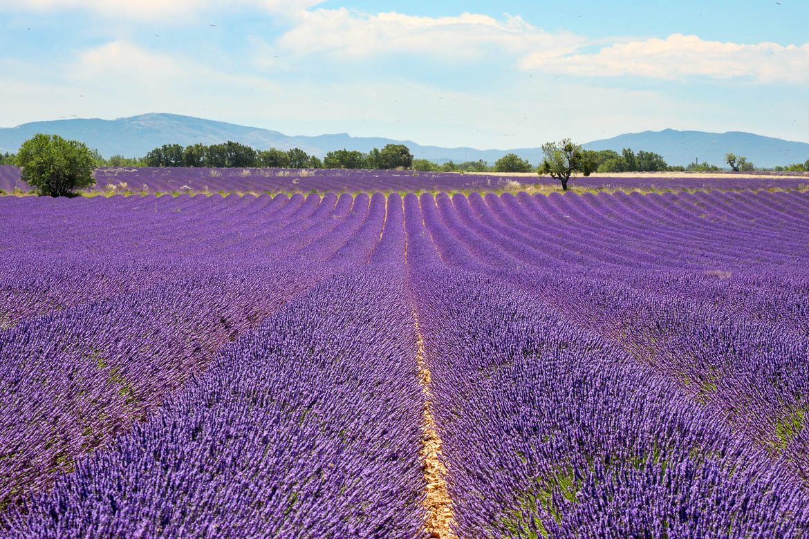

À environ 1h10 des Cabritas, la région des Baronnies, entre les contreforts des Préalpes et le Mont Ventoux, a des airs de Provence malgré son appartenance à la Drôme. Nyons et Buis-les-Baronnies en sont les deux étapes incontournables.

Nyons, la capitale de l'olive
Nyons est réputée pour son pont roman et ses oliveraies : c'est ici que pousse la fameuse olive noire de Nyons, appellation d'origine protégée issue de la variété Tanche, dont on tire une huile douce et parfumée. Moulins à huile, marchés colorés et ruelles ensoleillées composent l'atmosphère très provençale de la ville.
Buis-les-Baronnies, marché médiéval et parfums de tilleul
Un peu plus loin, Buis-les-Baronnies séduit par son charme pittoresque et son riche patrimoine historique : la place du marché à arcades du XIVe siècle, le couvent des Dominicains, le vieux pont roman sur l'Ouvèze, un moulin à huile d'olive et un jardin des senteurs. Depuis le XIXe siècle, la spécialité du village est le tilleul, dont les producteurs locaux tirent aussi thym, sauge, sarriette et lavande.
Bon à savoir avant votre visite
Privilégiez les jours de marché pour profiter pleinement de l'ambiance provençale. La route qui traverse la région, au milieu des oliveraies et des champs de lavande, mérite à elle seule le détour, avec de nombreux arrêts photo possibles. La région est également très prisée pour le vélo, la randonnée et le parapente.
Infos pratiques depuis Les Cabritas
- Distance depuis Flaviac : environ 1h10 de route
- Meilleure période : du printemps à l'automne, floraison de la lavande en été
- Idéal pour : marchés provençaux, gastronomie, randonnée, vélo
Envie de découvrir La Drôme provençale : Nyons et Buis-les-Baronnies depuis votre gîte en Ardèche ?
Les Cabritas vous accueillent à Flaviac, au cœur de l'Ardèche, pour un séjour confortable avec piscine privée, à deux pas des plus beaux sites de la région.
Vérifier les disponibilités